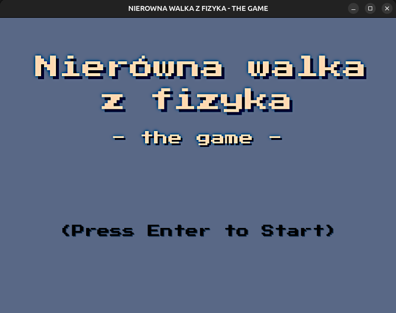

↑
2023
2023


Color Palette Generator
HTML CSS JavaScript
A JS web app that allows you to create color palettes

Danmaku game base
C++ CMake
Bullet hell game made in SFML (C++)

BootlegSnake
HTML
First year JavaScript Game2024
2024


Python Platformer
Python
PyGame platform game with a dedicated map editor
KamiJar20031.github.io
CSS HTML JavaScript
The website that features my Portfolio page, generated by HTML-Updater

Backrooms Crawler Game
C++ GLSL C
3D game made from scratch with OpenGL2025
2025


rogalPages
PHP CSS
A simple PHP project that serves as a forum

rogalTasks
Python JavaScript HTML
React+Flask web application that serves as a simple task manager
HTML Updater
Python HTML CSS
Python script that allows for an automation of refreshing my Portfolio website
Niedziele Handlowe
HTML CSS JavaScript
A website that shows whether you can shop on a Sunday in Poland2026
2026

OpenGL Linux
CMake C++ GLSL
A simple physics engine along with OpenGL visualization
TasksApp Port
Kotlin
Task manager ported to Android - curently WIP↓